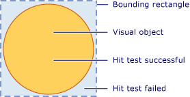
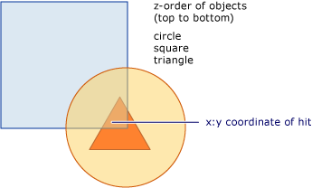
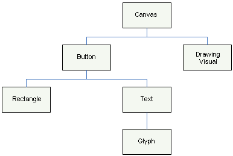
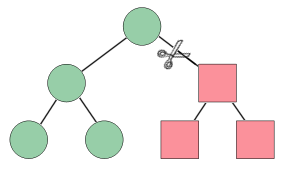

Проверка попадания на визуальном уровне
В этом разделе приведены общие сведения о функции проверки попадания, предоставляемой на визуальном уровне. Поддержка проверки попадания позволяет определить, попадает ли геометрический объект или точка в отображаемое содержимое Visual, что позволяет реализовать определенное поведение пользовательского интерфейса, например выделение прямоугольником для выбора нескольких объектов.
Сценарии проверки попадания
UIElement Класс предоставляет InputHitTest метод, который позволяет проверить попадание для элемента с использованием заданного значения координат. Во многих случаях InputHitTest метод предоставляет нужные функции для реализации проверки попадания элементов. Однако существует несколько сценариев, в которых может потребоваться реализация проверки попадания на визуальном уровне.
Проверка попадания отличныхUIElement объектов: Это применимо, если вы выполняется проверка попадания отличныхUIElement объекты, такие как DrawingVisual или графические объекты.
Проверка попадания с использованием геометрического объекта: Это применимо, если требуется проверка попадания с использованием геометрический объект, а не значения координат точки.
Попадания для нескольких объектов: Это применимо, когда вам нужно проверить попадание для нескольких объектов, например перекрывающихся объектов. Можно получить результаты для всех визуальных объектов, пересекающих геометрический объект или точку, а не только для первого из них.
Пропуск UIElement попадания политики: Это применимо, когда нужно игнорировать UIElement политику, которая учитывает такие факторы как отключен ли элемент или недоступные для проверки нажатия.
Note
Пример полного кода, иллюстрирующего проверку попадания на визуальном уровне, см. в разделе Пример проверки попадания с помощью DrawingVisuals и Пример взаимодействия проверки попадания с Win32.
Поддержка проверки попадания
Цель HitTest методы в VisualTreeHelper класс является определение, является ли значение координат геометрический объект или точка в отображаемое содержимое заданного объекта, например элемента управления или графического элемента. Например, можно использовать проверку попадания для определения, попадает ли щелчок мышью в ограничивающем прямоугольнике объекта в границы фигуры круга. Можно также переопределить реализацию проверки попадания по умолчанию для выполнения собственных вычислений по проверке попадания.
На следующем рисунке показана связь между областью не прямоугольного объекта и ограничивающим его прямоугольником.

Допустимая область проверки попадания
Проверка попадания и порядок по оси Z
Визуальный уровень Windows Presentation Foundation (WPF) поддерживает проверку попадания для всех объектов, в которых находится точка или геометрическая фигура, а не только для самого верхнего. Результаты возвращаются в порядке по оси z. Тем не менее визуальный объект, который передается как параметр, чтобы HitTest метод определяет, какая часть визуального дерева, в результате которого тестирования. Можно проверять на попадание все визуальное дерево или любую его часть.
На следующем рисунке объект-круг расположен поверх объектов квадрат и треугольник. Если вы заинтересованы только в z порядка, значение которого самый верхний визуальный объект проверки нажатия, можно задать перечисление визуальной проверки попадания для возврата Stop из HitTestResultCallback для остановки прохождения проверки попадания после первого элемента.

Z-порядок для визуального дерева
Если вы хотите перечислить все визуальные объекты под определенной точкой или геометрическим, возвращают Continue из HitTestResultCallback. Это означает, что можно выполнять проверку попадания для визуальных объектов, которые находятся под другими объектами, даже если они полностью не видны. Более подробные сведения см. в примере кода в разделе «Использование обратного вызова результатов проверки попадания».
Note
Проверку попадания можно выполнять и для прозрачного визуального объекта.
Проверка попадания по умолчанию
Можно определить, находится ли точка в пределах визуального объекта, с помощью HitTest метод, чтобы указать визуального объекта и точки координат значение. Параметр-визуальный объект определяет начальную точку в визуальном дереве для поиска при проверке попадания. Если визуальный объект найден в визуальном дереве, геометрия которых содержит точку с координатами, ему будет присвоено VisualHit свойство HitTestResult объекта. HitTestResult Возвращается из HitTest метод. Если точка не содержится в визуальном поддереве, то выполняется проверка попадания, HitTest возвращает null.
Note
Проверка попадания по умолчанию всегда возвращает самый верхний объект по оси Z. Чтобы определить все визуальные объекты, даже те, которые могут быть частично или полностью перекрыты, используйте обратный вызов результатов проверки попадания.
Значение координаты, передается как параметр точки для HitTest метод должен быть к пространству координат визуального объекта, то выполняется проверка попадания с. Например, при наличии вложенных визуальных объектов, определенных в точке (100, 100) пространства координат родительского элемента, проверка попадания дочернего визуального объекта в (0, 0) эквивалентно проверке попадания в точке (100, 100) в пространстве координат родительского элемента.
Ниже показано, как настроить обработчики событий мыши для UIElement объект, который используется для сбора данных событий, которые используются для попадания.
// Respond to the left mouse button down event by initiating the hit test.
private void OnMouseLeftButtonDown(object sender, MouseButtonEventArgs e)
{
// Retrieve the coordinate of the mouse position.
Point pt = e.GetPosition((UIElement)sender);
// Perform the hit test against a given portion of the visual object tree.
HitTestResult result = VisualTreeHelper.HitTest(myCanvas, pt);
if (result != null)
{
// Perform action on hit visual object.
}
}
Влияние визуального дерева на проверку попадания
Начальная точка в визуальном дереве определяет, какие объекты возвращаются во время перечисления объектов проверки попадания. Если есть несколько объектов, для которых нужно выполнить проверку попадания, визуальные объект, используемый в качестве начальной точки в визуальном дереве, должен быть общим предком всех интересующих объектов. Например если нужно выполнить проверку попадания и для элемента-кнопки и для визуального объекта на следующем рисунке, необходимо установить начальную точку в визуальном дереве на их общего предка. В этом случае элемент общим предком элемента-кнопки и визуального объекта является элемент canvas.

Иерархия визуального дерева
Note
IsHitTestVisible Свойство получает или задает значение, объявляющее, является ли UIElement-производный объект может быть возвращен как результат проверки нажатия в некоторой части его отображаемого содержимого. Это позволяет выборочно изменять визуальное дерево, чтобы определить, какие визуальные объекты участвуют в проверке попадания.
Использование обратного вызова результатов проверки попадания
Можно перечислить в визуальном дереве все визуальные объекты, геометрия которых содержит заданное значение координат. Это позволяет выделить все визуальные объекты, даже те, которые могут быть частично или полностью перекрыты другими визуальными объектами. Для перечисления визуальных объектов в визуальном дереве используется HitTest метод с помощью функции обратного вызова проверки попадания. Функция обратного вызова проверки попадания вызывается системой, если указанное значение координат содержится в визуальном объекте.
Во время перечисления результатов проверки попадания не следует выполнять никакие операции по изменению визуального дерева. Добавление или удаление объектов визуального дерева во время его проверки может привести к непредсказуемому поведению. Можно безопасно изменить визуальное дерево после HitTest возвращает метод. Вы можете предоставить структуру данных, таких как ArrayList, для хранения значений во время перечисления результатов проверки попадания.
// Respond to the right mouse button down event by setting up a hit test results callback.
private void OnMouseRightButtonDown(object sender, MouseButtonEventArgs e)
{
// Retrieve the coordinate of the mouse position.
Point pt = e.GetPosition((UIElement)sender);
// Clear the contents of the list used for hit test results.
hitResultsList.Clear();
// Set up a callback to receive the hit test result enumeration.
VisualTreeHelper.HitTest(myCanvas, null,
new HitTestResultCallback(MyHitTestResult),
new PointHitTestParameters(pt));
// Perform actions on the hit test results list.
if (hitResultsList.Count > 0)
{
Console.WriteLine("Number of Visuals Hit: " + hitResultsList.Count);
}
}
Метод обратного вызова проверки попадания определяет действия, которые выполняются при определении проверки попадания для конкретного визуального объекта в визуальном дереве. После выполнения этих действий возвращается HitTestResultBehavior значение, определяющее, следует ли продолжать перечисление других визуальных объектов, или нет.
// Return the result of the hit test to the callback.
public HitTestResultBehavior MyHitTestResult(HitTestResult result)
{
// Add the hit test result to the list that will be processed after the enumeration.
hitResultsList.Add(result.VisualHit);
// Set the behavior to return visuals at all z-order levels.
return HitTestResultBehavior.Continue;
}
Note
Порядок перечисления визуальных объектов попадания соответствует их координатам по оси Z. Первым перечисляется визуальный объект с самой большой координатой по оси Z. Остальные визуальные объекты перечисляются по убыванию значения координаты по оси Z. Этот порядок перечисления соответствует порядку отрисовки визуальных объектов.
Перечисление визуальных объектов в любое время в функции обратного вызова проверки попадания можно остановить, возвращая Stop.
// Set the behavior to stop enumerating visuals.
return HitTestResultBehavior.Stop;
Использование обратного вызова фильтра проверки попадания
Можно использовать необязательный фильтр проверки попадания для ограничения объектов, которые передаются в качестве результатов проверки попадания. Это позволяет пропустить части визуального дерева, которые не нужны для обработки в результатах проверки нажатия. Чтобы реализовать фильтр проверки нажатия, определить функцию обратного вызова фильтра проверки нажатия и передайте его в качестве значения параметра, при вызове HitTest метод.
// Respond to the mouse wheel event by setting up a hit test filter and results enumeration.
private void OnMouseWheel(object sender, MouseWheelEventArgs e)
{
// Retrieve the coordinate of the mouse position.
Point pt = e.GetPosition((UIElement)sender);
// Clear the contents of the list used for hit test results.
hitResultsList.Clear();
// Set up a callback to receive the hit test result enumeration.
VisualTreeHelper.HitTest(myCanvas,
new HitTestFilterCallback(MyHitTestFilter),
new HitTestResultCallback(MyHitTestResult),
new PointHitTestParameters(pt));
// Perform actions on the hit test results list.
if (hitResultsList.Count > 0)
{
ProcessHitTestResultsList();
}
}
Если вы не хотите предоставлять функция обратного вызова фильтра проверки попадания, передайте null значение в качестве параметра для HitTest метод.
// Set up a callback to receive the hit test result enumeration,
// but no hit test filter enumeration.
VisualTreeHelper.HitTest(myCanvas,
null, // No hit test filtering.
new HitTestResultCallback(MyHitTestResult),
new PointHitTestParameters(pt));

Обрезка визуального дерева
Функция обратного вызова фильтра проверки попадания позволяет перечислить все визуальные объекты, отображаемое содержимое которых содержит указанные координаты. Однако, может понадобиться пропустить отдельные части визуального дерева в функции обратного вызова результатов проверки нажатия. Возвращаемое значение функции обратного вызова фильтра проверки нажатия определяет, какой тип действия должен выполняться при перечислении визуальных объектов. Например, если возвращается значение ContinueSkipSelfAndChildren, можно удалить текущий визуальный объект и его дочерние элементы из перечисления результатов проверки попадания. Это означает, что функция обратного вызова результатов проверки попадания не увидит эти объекты в перечислении. Обрезка визуального дерева объектов позволяет уменьшить объем обработки во время перечисления результатов проверки попадания. В следующем примере кода фильтр пропускает метки и их потомков и проверяет все остальные объекты.
// Filter the hit test values for each object in the enumeration.
public HitTestFilterBehavior MyHitTestFilter(DependencyObject o)
{
// Test for the object value you want to filter.
if (o.GetType() == typeof(Label))
{
// Visual object and descendants are NOT part of hit test results enumeration.
return HitTestFilterBehavior.ContinueSkipSelfAndChildren;
}
else
{
// Visual object is part of hit test results enumeration.
return HitTestFilterBehavior.Continue;
}
}
Note
Функция обратного вызова фильтра проверки попадания иногда вызывается в случаях, когда функция обратного вызова результатов проверки попадания не вызывается.
Переопределение проверки попадания по умолчанию
Вы можете переопределить визуального объекта по умолчанию поддержки проверки попадания путем переопределения HitTestCore метод. Это означает, что при вызове HitTest метод, переопределенная реализация HitTestCore вызывается. Переопределенный метод вызывается при попадании в ограничивающий прямоугольник визуального объекта, даже если координата не попадает в отображаемое содержимое визуального объекта.
// Override default hit test support in visual object.
protected override HitTestResult HitTestCore(PointHitTestParameters hitTestParameters)
{
Point pt = hitTestParameters.HitPoint;
// Perform custom actions during the hit test processing,
// which may include verifying that the point actually
// falls within the rendered content of the visual.
// Return hit on bounding rectangle of visual object.
return new PointHitTestResult(this, pt);
}
Иногда может понадобиться проверка попадания как для ограничивающего прямоугольника, так и для отображаемого содержимого визуального объекта. С помощью PointHitTestParameters значение параметра в переопределенный HitTestCore метод в качестве параметра для базового метода HitTestCore, можно выполнять действия при попадании ограничивающего прямоугольника визуального объекта, а затем выполните повторную проверку попадания для к просмотру содержимого визуального объекта.
// Override default hit test support in visual object.
protected override HitTestResult HitTestCore(PointHitTestParameters hitTestParameters)
{
// Perform actions based on hit test of bounding rectangle.
// ...
// Return results of base class hit testing,
// which only returns hit on the geometry of visual objects.
return base.HitTestCore(hitTestParameters);
}
См. также
- HitTest
- HitTestResult
- HitTestResultCallback
- HitTestFilterCallback
- IsHitTestVisible
- Проверка нажатия с использованием примера DrawingVisuals
- Попадания с помощью примера взаимодействия Win32
- Проверка попадания геометрического объекта в визуальный объект
- Проверка попадания с использованием контейнера узла Win32